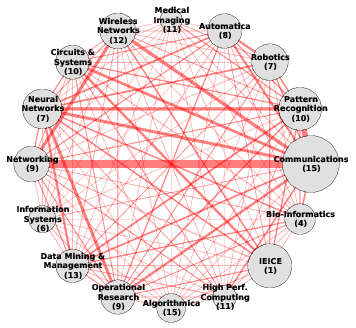
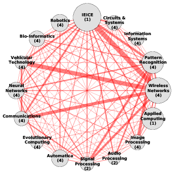

PaNDa+:
A unifying framework for mining approximate
top-k binary patterns
Abstract. A major mining task for binary matrixes is the extraction of approximate top-k patterns that are able to concisely describe the input data. The top-k pattern discovery problem is commonly stated as an optimization one, where the goal is to minimize a given cost function, e.g., the accuracy of the data description. In this work, we review several greedy algorithms, and discuss PaNDa+, an algorithmic framework able to optimize different cost functions generalized into a unifying formulation. We evaluated the goodness of the algorithm by measuring the quality of the extracted patterns. We adapted standard quality measures to assess the capability of the algorithm to discover both the items and transactions of the patterns embedded in the data. The evaluation was conducted on synthetic data, where patterns were artificially embedded, and on real-world text collection, where each document is labeled with a topic. Finally, in order to qualitatively evaluate the usefulness of the discovered patterns, we exploited PaNDa+ to detect overlapping communities in a bipartite network. The results show that PaNDa+ is able to discover high-quality patterns in both synthetic and real-world datasets.
If you want more information about PaNDa+, please check the full paper [3]. PaNDa+ is an imporvement of our previous works [2, 1]. If you want to download the source code, go to the ”Implementation source code and usage” section below . If you use this software, please cite [3] in your work.
|  |  |
| (a): 𝜖r = 1.0, 𝜖c = 1.0 | (b): 𝜖r = 0.5, 𝜖c = 0.8 |
Figure 1: the top-16 patterns mined by PaNDa+ JE from the DBLP database with different noise thresholds 𝜖r and 𝜖c. | |
Patterns extracted from a real social network
We discuss the results of using PaNDa+ as a tool to identify communities from bipartite graphs extracted from a real-wold dataset. To this end, we mined a dump of the DBLP database, spanning a period that goes from January 2008 to July 2013. We built a bipartite graph of authors and publication venues, where an edge links an author a to a publication venue v iff a published at least a paper at conference/journal v regardless the year of publication. We discarded authors who published in less than 5 venues, and venues that hosted less than 40 distinct authors. We also removed the venue “Computing Research Repository” (CoRR), which is a free online multi-disciplinary repository and it is not useful to our purpose of detecting topical communities. From this bipartite graph, we generated the incidence binary matrix 𝒟, where rows are authors and columns are venues. The resulting binary matrix 𝒟 includes N = 112,261 authors, and M = 4,283 venues.
We run PaNDa+ JE (with R = 20 and correlation item ordering) by varying the two maximum noise thresholds 𝜖r and 𝜖c. After testing several combinations, we observed that all of them are very useful for studying, inspecting and understanding the diverse overlapping social communities present in the bipartite DBLP graph. Small noise thresholds generate small communities covering a very specific topic. By increasing the noise thresholds, it is possible to analyze how the communities merge together into wider topics. Due to space constraints, we only discuss two parameter configurations: (i) 𝜖r = 1.0, 𝜖c = 1.0, and (ii) 𝜖r = 0.5, 𝜖c = 0.8. In the case (i) we do not give any constraint over the amount of noise contained in each pattern, so that the noise is only limited by cost function JE. In the case (ii) instead, any extracted pattern should contain authors that published in at least 50% of the pattern’s venues, and venues that contain at least 20% of the pattern’s authors. The setting (ii) of the two parameters is reasonable, considering that there are many more authors than venues. The algorithms Asso and Hyper+ were not able to complete within one hour and therefore they are not discussed here. This is because their implementation does not handle efficently large and sparse data.
It is worth remarking that DBLP does not always disambiguate homonymous authors. As a result, PaNDa+ extracted a pattern with more than 50 venues and as little as 200 authors. By manual inspection, we found that the venues of the pattern covered very different topics, and that authors has common Chinese surnames (e.g., Li, Liu, Wang, Yang, Zhang, etc.). This pattern was clearly due to the presence of homonymous authors, and we thus did not consider it in the following discussion.
Fig. 1 shows the top-16 patterns extracted by PaNDa+ JE. Each pattern is represented by a node, whose label was manually chosen according to the venues composing it. The size of the node is proportional to the number of authors contained, whereas the number of venues is shown between parentheses. The sharing of authors among patterns is instead captured by the thickness of the edges. Finally, nodes are placed according to their extraction order, the first being the rightmost and then proceeding counter-clock wise.
When using the larger noise thresholds of case (i), see Fig. 1a, the extracted patterns are larger. Communications is the largest pattern, and it has a significant sharing of authors with Networking. Despite the strong sharing of authors, there is only one overlapping venue (ICC). By inspecting the patterns’ venues in Table 1, the reader can appreciate that although the topics of the two patterns are related, they are separated enough: the former is concerned with low level signal transmissions, whereas the latter mainly regards network protocols. Other strong links are present between Operational Research and Neural Networks and between Pattern Recognition and Communications.
Interestingly enough, the IEEE TKDE journal falls into the Data Mining & Management pattern. The cluster of venues appears to be very reasonable, including some information retrieval conferences (e.g., WSDM). Also, it contains the most influential authors in the Data Mining field according to Microsoft Academic Search: Jiawei Han, Philip S. Yu, Rakesh Agrawal, Christos Faloutsos, Hans-Peter Kriegel, Eamonn J. Keogh, George Karypis, and Heikki Mannila. Finally, readers of this journal may appreciate the quality of the venue groups Algorithmica and High Performace Computing.
Fig. 1b shows the top-16 patterns extracted with the less tolerant configuration of case (ii). Due to space constraints, we do not illustrate in detail their venue composition. We observe, that the extracted patterns have a finer granularity. The previous Communications related clusters are now separated in more focused groups: Wireless Networks, which includes ICC, VTC Spring, GLOBECOM, and WCNC, Communications, made up of ICC, GLOBECOM, IEEE Communications Letters, and IEEE Transactions on Communications, Vehicular Technology, composed of CC, PIMRC, IEEE Transactions on Vehicular Technology and IEEE Transactions on Wireless Communications, and, finally, Signal Processing, which is composed of ICASSP and IEEE Transactions on Signal Processing.
Another interesting example is given by the Pattern Recognition cluster, which is now separated from the 3 related sub-fields of Signal Processing, Audio Processing and Image Processing, each of them having a large author overlap with the new more focused Pattern Recognition pattern. Note is also well connected to Wireless Networks.
Finally, note that in both Fig. 1a and Fig. 1b there is a pattern labeled by IEICE, composed of a single venue, namely IEICE Transactions, which contains an abnormal number of authors (about 6,000). It is a publication of an Asiatic organization which mainly contains papers on electronics and communications.
| Table 1: Some groups of publication venues referring to Fig. 1a. | ||
| Topic (#Venues) | Group of Publication Venues | No. of Authors |
| Communication (15) | ICC, IEEE Transactions on Signal Processing, VTC Fall, VTC Spring, IEICE Transactions, | 6373 |
| EURASIP J. Adv. Sig. Proc., ICASSP, IEEE T. Vehicular Technology, WCNC, PIMRC, | ||
| IEEE Transactions on Wireless Communications, GLOBECOM, | ||
| IEEE Communications Letters, EURASIP J. Wireless Comm. and Networking, | ||
| IEEE Transactions on Communications | ||
| Wireless Networks (12) | EURASIP J. Wireless Comm. and Networking, IEEE Transactions on Communications, | 2524 |
| VTC Fall, VTC Spring,IEEE Communications Letters, WCNC, | ||
| Wireless Personal Communications, PIMRC, IEEE Transactions on Wireless Communications, | ||
| GLOBECOM, Wireless Sensor Network, IEEE T. Vehicular Technology | ||
| Networking (9) | ICC, IEEE Trans. Parallel Distrib. Syst., IEEE Journal on Selected Areas in Communications, | 2509 |
| Computer Networks, Computer Communications, Int. Journal of Network Management, | ||
| IEEE Trans. Mob. Comput., IEEE/ACM Trans. Netw., INFOCOM | ||
| Data Mining & | CIKM, AAAI, EDBT, SIGIR, ICDE, SIGMOD Conference, WSDM, ICDM, MLDM, | 2178 |
| Management (13) | WWW (Companion Volume), PVLDB, IEEE Trans. Knowl. Data Eng., KDD | |
| Algorithmica (15) | Electronic Colloquium on Computational Complexity (ECCC), Inf. Process. Lett., ISAAC, | 1644 |
| Theory Comput. Syst., FOCS, STACS, ESA, Theor. Comput. Sci., APPROX-RANDOM, | ||
| STOC, SODA, ACM Transactions on Algorithms, SIAM J. Comput., ICALP (1), | ||
| Algorithmica | ||
| High Performace | IEEE Trans. Computers, IPDPS, IPDPS Workshops, MASCOTS, | 1106 |
| Computing (11) | IEEE Trans. Parallel Distrib. Syst., SC, J. Parallel Distrib. Comput., ICPP, CCGRID, | |
| ICPADS, Concurrency and Computation: Practice and Experience | ||
Implementation source code and usage
The source code of the algorithm can be downloaded here: panda.tgz. SWIG is required to compile the source code. The input format is the usual ascii format of FIMI competition. Below, the options of the algorithm implemetation.
# ** Error-tolerant frequent itemsets discovery.
usage: ./panda
-d <dataset> input data file (MANDATORY)
-k <#patterns> -1:infinity, def:-1
-s <strategy> f - for frequency, c - for child frequency,
o - for correlated, h - for charm
def:f
-r <# rnd iter> 0: no randomness, def:0
-c <cost f> 1 - norm 1, w - norm s with weight,
2 - norm 2,
x - typed xor, n - naive xor
def:1
-w <weight> weight to be used for the "-c w" option
-o <output> def: non output file
-a <data struct> f - for fptree, v - for full vertical
def:f
-y row tolerance ratio
-t column tolerance ratio
-v verbose mode. Outputs cost per iteration.
References
[1] Claudio Lucchese, Salvatore Orlando, and Raffaele Perego. A generative pattern model for mining binary datasets. In SAC ’10: Proceedings of the 25th ACM Symposium on Applied Computing, March 2010.
[2] Claudio Lucchese, Salvatore Orlando, and Raffaele Perego. Mining top-k patterns from binary datasets in presence of noise. In SDM ’10: Proceedings of the 2010 SIAM International Conference on Data Mining, April 2010. (best 12).
[3] Claudio Lucchese, Salvatore Orlando, and Raffaele Perego. A unifying framework for mining approximate top-k binary patterns. IEEE Transactions On Knowledge and Data Engineering, 26(12):2900–2913, 2014.